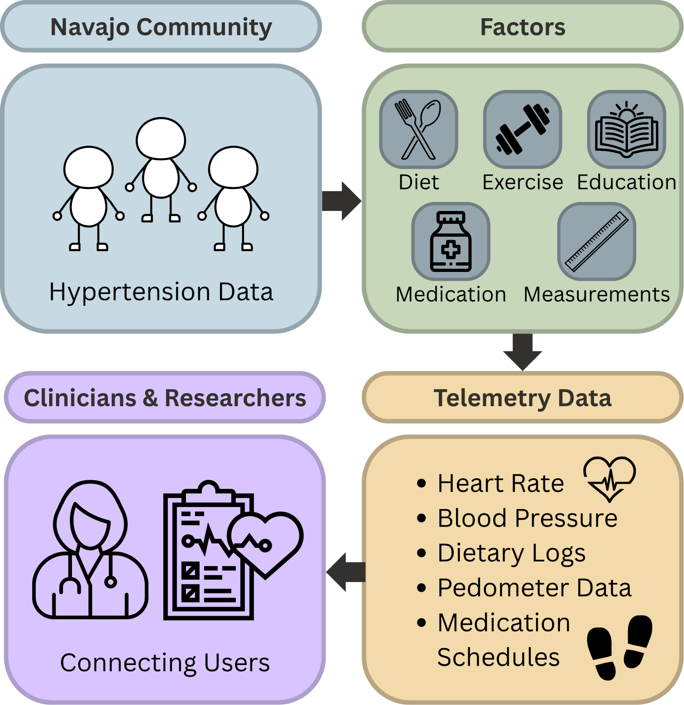

Hypertension is estimated to affect 1.4 billion adults worldwide, but only 25% of the population have their condition under control. This disparity is most prominent within Indigenous communities, facing hypertension prevalence rates 10-20% higher than in non-Indigenous groups
These issues emerge as a direct manifestation of systemic technological and healthcare inequalities alongside a severe cultural mismatch in medical interventions. Standard healthcare tools often fail to account for cultural nuances, leading to a "digital divide" where medical interventions feel foreign and clinical barriers prevent life-saving care.
Primary clinical hypertension tracking apps are often:
When medical models are forced onto Indigenous contexts without adaptation, the result is low engagement and a profound lack of trust. This technology should act as a bridge to better health, not a barrier.
In partnership with Dr. Jared Duval and the Playful Health Technology (PHT) Lab, we are developing CardioCare Quest. CardioCare Quest is a mobile health gaming platform designed to help members of the Navajo community track hypertension data through culturally grounded, story-based play rather than traditional clinical apps. By replacing sterile health-tracking tools with interactive Twine games inside a shared mobile app, the project aims to improve engagement, trust, and long-term participation in hypertension management.
Our role in this project is split into two core technical and creative responsibilities:

CardioCare Quest uses interactive story-based choices to collect self-reported hypertension data from users in a more engaging and culturally grounded way. That information can then be privately stored and used to help track progress over time within the app.
By integrating these features, CardioCare Quest hopes to build a strong base for the future of medical data collection whilst also having broader implications in the world of culturally responsive digital health innovations.
The initial concept for this project was provided by our sponsor in the form of this article